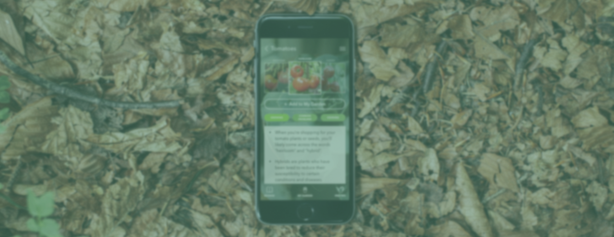
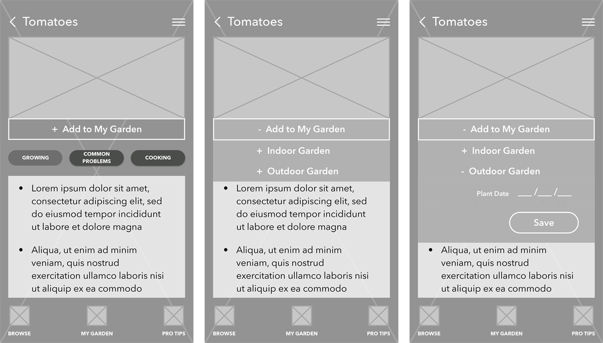

Home Harvest
Gardening the easy way
Background
Weather can be unpredictable, especially in Seattle. It seems to always be raining, but does that mean your plants are getting enough water? How could potential frost effect your garden? In order to master gardening, you have to be on top of the weather otherwise your plants will suffer. If your garden is exposed to frost at just the wrong time your whole harvest could be distroyed.
User Testing and Iterations
After re-sketching I began to feel comfortable enough to bring the prototype to life. I created a quick clickable
proto and tested again. Testing unveiled that there were even more gardening variables that I hadn't accounted for;
such as what stage of growth the plants are in. Upon discovering this, I decided to conduct more secondary
research and edited the design again to reflect this new found knowledge.

What Worked and Next Steps
To further improve Home Harvest, the next steps would be to include better sorting options within your Plant Library so that you can browse plants by what is currently in season in your local neighborhood.